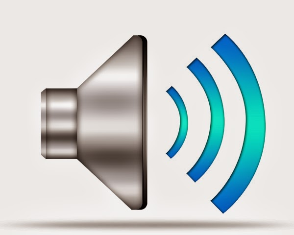

Sound Driver Update
A sound driver update refers to the process of updating the software that controls and manages the audio functionality of your computer or other equipment. Sound drivers, also referred to as audio drivers or sound card drivers, are essential components that allow your operating system to communicate with audio hardware, such as a sound card or integrated audio controller.

How to update sound driver on Windows & macOS?
To update sound drivers on Windows and macOS, you can follow the below steps:
Updating sound drivers on Windows
- Open Device Manager by pressing the Windows key + X and selecting "Device Manager" from the menu.
- In the Device Manager window, locate and expand the category "Sound, video, and game controllers".
- Right-click your sound device (it may be labelled as "Realtek High Definition Audio", "Conexant SmartAudio" or similar) and select "Update Driver".
- In the Update Driver Software window, select the option to search for updated driver software automatically. Windows will connect to the Internet and look for the latest drivers for your sound device.
- If Windows finds an updated driver, it'll prompt you to download and install it. Follow the on-screen prompts to complete the installation.
- After the driver update is finished, restart your computer for the changes to take effect.
Updating sound drivers on MacOS:
- Click the Apple menu in the top-left corner of the screen and choose "About This Mac."
- In the window that appears, click on the button "Software Update". This will open the App Store app and check for updates.
- If an update for macOS is available, click the "Update" button next to it to install the latest version of macOS. Sometimes, a sound driver update is bundled with a system update.
- After the update is installed, restart your Mac for the changes to take effect.